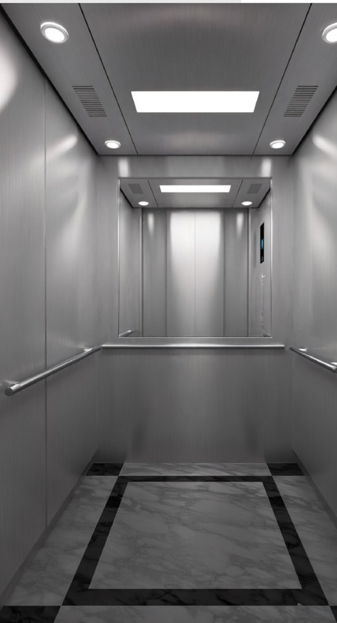
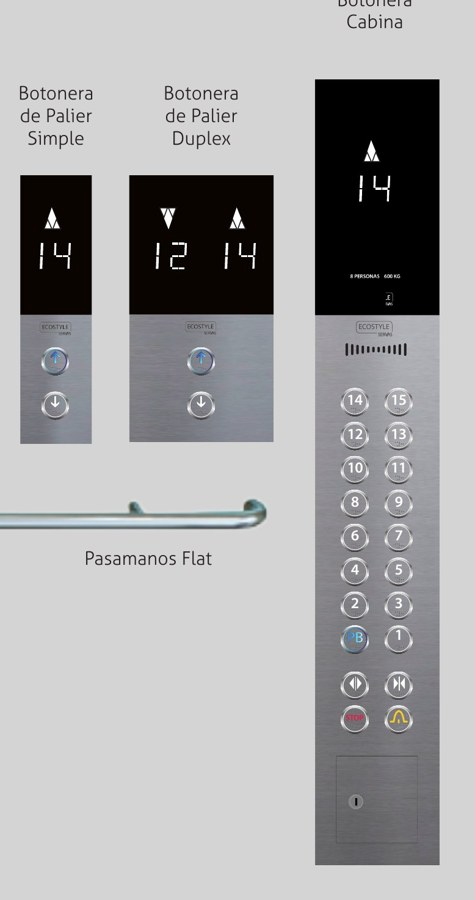
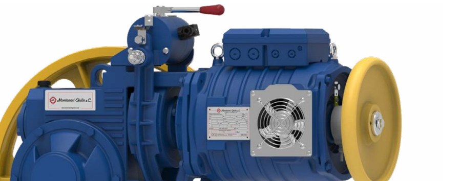
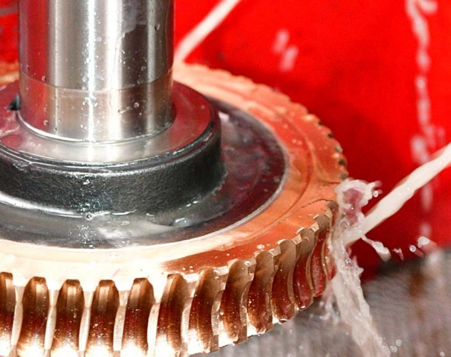
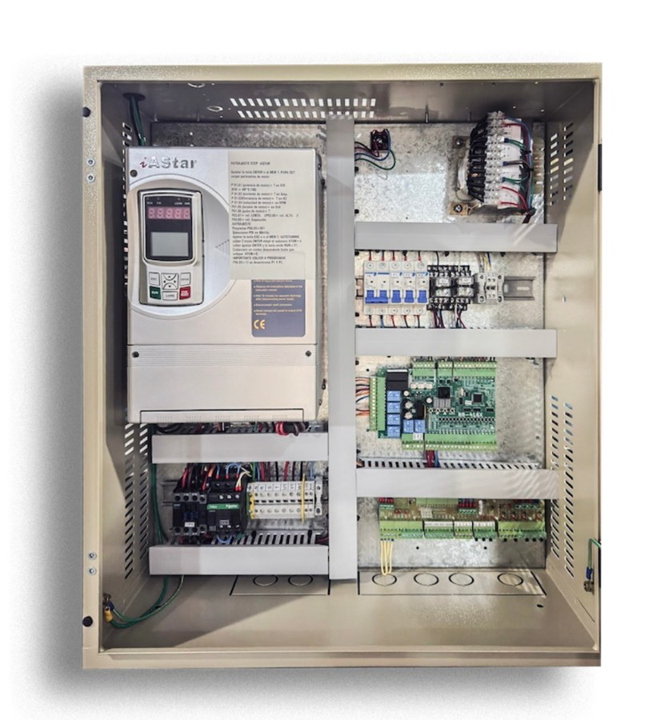

En este trabajo hicimos la instalación eléctrica y el transporte vertical del edificio de viviendas que venimos trabajando en la materia. Vimos qué consume cada parte del edificio, armamos el esquema unifilar de tableros y elegimos el ascensor, su máquina y su tablero de maniobra. La memoria está dividida en dos partes, Electricidad y Transporte vertical, y en cada una explicamos qué elegimos y por qué.
El edificio tiene subsuelo, planta baja, seis pisos altos y azotea, con la sala de máquinas del ascensor sobre la azotea. Tiene 10 viviendas y 3 viviendas dúplex. Los dúplex ocupan dos pisos cada uno y tienen escalera interna. En planta baja están el ingreso, el hall y el SUM, y en el subsuelo están las instalaciones de servicio, como las bombas.
Esto define la instalación eléctrica, porque hay dos consumos muy distintos: el de cada vivienda, que paga cada propietario, y el de las partes comunes (bombas, ascensor, palieres, SUM), que paga el consorcio.
El edificio se alimenta de la red de baja tensión de la distribuidora, de 3 × 380/220 V (380 V entre fases y 220 V entre fase y neutro). La acometida entra con tres fases y neutro a la caja general de toma, con los fusibles de la distribuidora. La pedimos trifásica porque el edificio tiene muchas unidades y equipos con motores trifásicos, como las bombas y el ascensor.
De la caja de toma se pasa a la sala de medidores en planta baja, donde hay 10 medidores monofásicos para las viviendas, 3 monofásicos para los dúplex y 1 trifásico para los servicios generales. Elegimos medición individual para que cada propietario pague solo lo que consume, y las partes comunes tienen su propio medidor, que paga el consorcio. Los juntamos en planta baja para que la distribuidora los lea sin entrar a los departamentos.
Cada vivienda y cada dúplex es monofásica (fase + neutro, 220 V). Todo lo que hay en una vivienda (luces, tomas, heladera, lavarropas, splits) funciona a 220 V y no hay motores grandes. La potencia de un departamento entra en una sola fase, y el medidor, el tablero y los cables son más simples y baratos.
Los servicios generales son trifásicos (3F + N + PE) porque las bombas y el ascensor tienen motores trifásicos de 380 V. Para la misma potencia, un motor trifásico es más chico, arranca mejor y rinde más. Además, la suma de las cargas comunes es grande, y repartida en tres fases cada conductor lleva menos corriente. Los circuitos de 220 V de servicios generales salen del mismo tablero, cada uno en una fase distinta.
Cada vivienda tiene un tablero principal (TP-V) al ingreso, con el interruptor general y el diferencial, desde donde se corta todo el departamento. También tiene un tablero seccional (TS-V), de donde salen los circuitos de iluminación y tomas. Los dúplex tienen el TP-D al ingreso, el TS-D en la planta de abajo y un TSS-D (subseccional) en la planta de arriba. Pusimos el subseccional arriba para que los circuitos de ese piso no bajen todos hasta el tablero de abajo: los cables quedan más cortos y, si hay una falla, se puede cortar solo esa planta.
Después del medidor trifásico está el TP-SG, con un interruptor general tetrapolar con diferencial y una barra de la que salen 9 líneas, una para cada tablero seccional:
| Tablero | Alimenta | Protección | Por qué |
|---|---|---|---|
| TS-1 | Subsuelo | bipolar · R | Iluminación y tomas del subsuelo, separado del resto. |
| TS-2 | Planta baja | bipolar · S | Hall, ingreso y palieres: lo más usado, no se corta por fallas en otro sector. |
| TS-3 | Azotea | bipolar · T | Iluminación y tomas de la azotea y de la sala de máquinas. |
| TS-4 | SUM | bipolar · R | Uso propio y cargas variables (eventos, equipos): línea exclusiva. |
| TS-5 | Bomba cloacal | tetrapolar · RST | Motor trifásico. Saca los líquidos cloacales del subsuelo. |
| TS-6 | Bombeo de agua | tetrapolar · RST | Motor trifásico. Sube el agua de la cisterna al tanque de reserva. |
| TS-7 | Ascensores | tetrapolar · RST | Motor trifásico de la máquina de tracción (ver Parte 2). |
| TS-8 | Caldera | bipolar · S | Comando, encendido y bomba de la caldera, a 220 V. |
| TS-9 | Termotanque | bipolar · T | Equipo de 220 V, con su línea para cortarlo por mantenimiento. |
Pusimos un seccional para cada servicio para que, si salta una protección, se corte solo ese servicio. Así cada equipo se puede cortar por mantenimiento sin tocar los demás, y los motores quedan separados de la iluminación. Las líneas de motores son tetrapolares (tres fases y neutro). Las de 220 V son bipolares y las repartimos entre R, S y T para que ninguna fase quede más cargada.
Cada tablero tiene interruptor termomagnético, que corta por sobrecarga o cortocircuito y protege los cables, e interruptor diferencial, que corta cuando se escapa corriente a tierra, por ejemplo a través de una persona, y protege a las personas. Son bipolares en monofásico y tetrapolares en trifásico, para cortar todos los conductores activos a la vez.
Junto a la sala de medidores hay una jabalina de la que sale el conductor de protección (PE), que llega a todos los tableros. A él se conectan las partes metálicas de los equipos y los tomas con tierra. Si un cable toca una carcasa, la corriente se va por el PE y el diferencial corta. En el punto más alto del edificio planteamos un pararrayos: una punta captora sobre un mástil, con un conductor de bajada hasta su propia puesta a tierra, unida a la de la instalación para que todo quede al mismo potencial.
Pusimos un ascensor con 8 paradas (subsuelo, planta baja y pisos 1.º a 6.º), con un recorrido de unos 21 m. Elegimos un ascensor eléctrico de tracción con sala de máquinas en la azotea, por estas razones:
Cómo funciona: un motor mueve, a través de un reductor, una polea con gargantas por donde pasan los cables de acero. De un lado cuelga la cabina y del otro el contrapeso, que pesa lo mismo que la cabina más alrededor de la mitad de la carga. La cabina se mueve por el rozamiento entre los cables y la polea, y sube y baja por guías. El freno de la máquina la sostiene cuando está parada. Si baja más rápido de lo debido, el limitador de velocidad acciona el paracaídas, que la frena contra las guías. En el foso hay amortiguadores.


Tomamos la línea EcoStyle de Servas, fabricada en Argentina, con repuestos y service locales. Está pensada para edificios de este tamaño: hasta 16 paradas, hasta 1,5 m/s y menos de 1.000 kg, con o sin sala de máquinas. Adoptamos la versión EM (con sala de máquinas), con cabina de 1.100 × 1.300 mm para 450 kg (6 personas), hueco de 1.750 × 1.590 mm con contrapeso lateral, puerta lateral de 800 mm y velocidad de 1 m/s.
Es la cabina más chica de la línea en la que entra una silla de ruedas, y 6 personas por viaje alcanzan para un edificio de viviendas. Con 1 m/s el recorrido completo se hace en unos 21 segundos. Más velocidad obligaría a una máquina más grande y a más altura de hueco. El fabricante pide un foso de 1.280 mm como mínimo, para los amortiguadores, y una última altura de 3.820 mm entre la última parada y el techo del hueco, para que la cabina tenga lugar si se pasa y para proteger al técnico que trabaja sobre el techo.


Elegimos la M73 de Montanari (distribuida por Trimarchi), una máquina con reductor de sinfín y corona. La configuramos con polea de 480 mm, relación 1/37 y motor asincrónico de 5,5 kW, 4 polos, con variador VVVF. Según el catálogo, así da 1,02 m/s con hasta 499 kg. La carga estática máxima es de 2.200 kg, el reductor pesa 110 kg y lleva 2,8 l de aceite.

El tablero de maniobra recibe los llamados de palieres y cabina, decide a qué piso ir, comanda el motor y controla las seguridades. Elegimos el Control VVF para sala de máquinas de CF Control (Argentina), que va en la sala de máquinas junto a la M73. Adentro tiene el variador de frecuencia, los contactores del motor, las protecciones y borneras, la placa de control con display de posición y errores, y la placa de comunicación.
El ascensor se alimenta desde el TS-7 del tablero de servicios generales, con una línea tetrapolar (3F + N + PE), porque el motor de la M73 es trifásico de 380 V. La línea llega al tablero de maniobra CF Control en la sala de máquinas. La iluminación de la sala sale del TS-3 (Azotea), así que hay luz aunque se corte el ascensor para el mantenimiento. Su consumo lo mide el medidor trifásico y lo paga el consorcio.